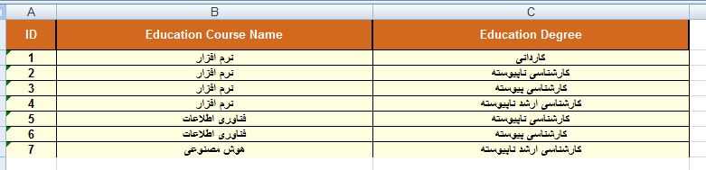

If you have branch data (Export button light's is
ON ) and you want to export that, click on Export
button from under the Branch button in main form. then enter
path for save branch data in excel
file.
* if your branch database is empty then Export
button like this is:
One sample of branch data in Excel
file:

You can Import this data every time when you need to that,
by Import button .

 ) and you want to export that, click on Export
button from under the Branch button in main form. then enter
path for save branch data in excel
file.
) and you want to export that, click on Export
button from under the Branch button in main form. then enter
path for save branch data in excel
file. .
.